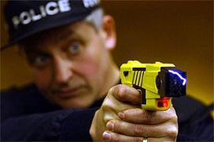
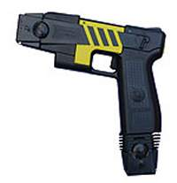
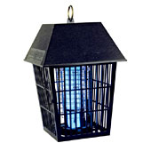
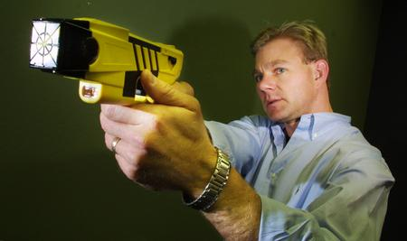

|
Stun GunsKnow what you can get for about forty bucks? A stun gun. Think about it: a hand-held, battery operated device no larger than an iPod, suitable for jabbing into strangers, rendering them temporarily immobile while you pluck the contents of their wallets and steal their iPods. Or maybe you're just tired of girls saying no -- if only people could just get to know you better! Let's spin the globe and witness how individuals throughout the world -- in law enforcement and the private sector -- are using their stun guns. Unless you're the one holding the device, the following scenarios and situations are indeed those which you might want to avoid. In June of 2003, Carlisle police in Pennsylvania were called to a convenience store, where 53 year-old Tom Gruver was observed drunk-like and incoherent, attempting to get into his car. To stop him, police used a stun gun. Unfortunately, Mr. Gruver wasn't drunk -- he was in diabetic shock. He described being Tasered, "kinda like grabbing ahold of a bare electric wire." Shopping mall security guards are now in cahoots with local police to make sure you get zapped post-haste if you linger too long in front of Hot Dog on a Stick. Flint Township police electrocuted a 23 year old in 2006 after he refused to leave the Genesee Valley shopping center in Michigan. Christ, dudes! What if he was looking for the Stun Gun Outlet? Remember former heavyweight champion Oliver McCall, who knocked out Lennox Lewis for the WBC heavyweight title in 1994? Of course you don't. McCall got into a bit of a scuffle after police officers spotted him trespassing in a public housing development in Nashville, Tennessee. Police asked him if lived in the area, and then directed his attention toward the NO TRESPASSING signs. McCall, 250 pounds and well over 6-foot-2, informed them that he was indeed a former heavyweight champion, the one who knocked out Lennox Lewi-- oh my God he's running away. He's fleeing the interview! Come back, we just wanna talk! Methinks I know where this is going. Officers hauled out their Taser guns -- extremely high voltage weapons which really do resemble guns -- and rendered the former boxer down for the count. Tasers mimic and scramble your body's natural electrical signals, temporarily disconnecting your brain from your nervous system to shut down your muscles. Tiny probing darts fastened to thin copper wires are expelled by compressed air from the Taser, discharging a five-second burst of electricity averaging 50,000 volts in the direction of the suspect. These flying electrodes are capable of penetrating Level III body armor, where they sink into the skin and bring you to your knees. The average bug zapper only delivers about 2,000 volts, so just be cool. To purchase official Taser International products on the Web, you're required to create a user account and fill out an online form which asks for your social security number, date of birth, and driver's licence information. If you put in fake information to bypass the bullshit (by claiming you're Fag Face from Cocksucker, Colorado) -- the Taser ID cross-checking system will return an "unknown identity" alert. You'll then be asked for your previous address, so the identity cross-checking can try again. Chances are, when an officer knocks you down with a Taser gun, they've already sized you up as a big problem. Boxer McCall spit at the officers and threatened to kill them. Cocaine and a glass pipe were found in his pocket. Eventually he was stuffed into a cop car, held on a $299,000 bond, and charged with criminal trespassing, resisting arrest, assaulting police officers, threatening to kill an officer, and being a fugitive from justice on charges from Virginia. McCall's previous arrests include throwing a Christmas tree in a hotel lobby. As for the former boxer's heavyweight status -- well, he tried to win the title back in 1997. During the fifth round, he stopped throwing punches and broke out in tears, refusing to leave his corner. The fight was cancelled, and the $3,075,000 purse still remains in escrow somewhere in a New Jersey bank. Meanwhile, ninety percent of individuals shocked by cops are minorities. The word Taser is the most commercially identifiable brand name of a electronic weapons manufacturer. It's not some wackity-ass science fiction hybrid of space-age laser beams and magic: TASER stands for Thomas A. Swift's Electric Rifle, named after a fictional teenage inventor. Who says arms dealers don't have a sense of humor? More like stun fun! What if you just stun-gunned every single woman you saw walking down the street? That's how 57-year-old Hirohito Shibuya of Tokyo managed to accumulate nearly a dozen wives and girlfriends -- all at the same time! With a surprisingly spry combination of tear gas, stun guns, intimidating sunglasses and military fatigues, Hirohito bullied and zapped eleven women -- mostly in their 20s, one in her 50s -- into a suburban harem, and prevented them from leaving with well-timed jabs of the stun gun. After he was arrested in 2006 and the women were set free, neighbors admitted to reporters they thought Hirohito's house was actually a waitresses' dormitory, whatever that might be. The press, meanwhile, went on to nickname Hirohito "the enchanter". Why not just call him Hiro-hottie? BZZzzZzZZZzzt. Don't be mouthin' off at cops in Texas. In 2005, the Houston Chronicle reported
that police officers Tasered "verbally aggressive" suspects about fourteen
times over a six month period. Immediately after Tasers were integrated into
widespread usage throughout the Houston Police Department as an alternative
to guns or batons, they started "going off" more than once a day. And if you're
a distressed sixteen-year-old female threatening suicide and brandishing
a knife, consider the extraordinary lengths taken "The officer spoke with the female and the female moved towards him, moving the knife over her head. The Taser did not have the desired effect. The female pulled the darts out of her body and continued towards the officer." The deputy then fired a shot at the girl. Police say the officer was "stumbling" as he fired -- and fired a second shot which grazed the teenager's right foot. At that point, a precinct officer showed up and tried to deploy pepper spray, but that didn't work either. You just can't keep sad girls down. In addition to all the suicidal white punks on dope out there roaming the earth, electro-shockable weapons are now being deployed on unarmed individuals, children, people in restraints, pregnant women, and the physically disabled. Increasingly, Taser guns are engaged in lieu of the efforts it might otherwise take to dispatch a mental health professional to the scene of a disturbance. Using categories provided by the U.S. Bureau of Justice Statistics, Amnesty International demonstrated that 52 percent of stun gun cases involved an attempted suicide; 15 percent involved officers disrupting a crime in progress; 13 percent were individuals fleeing, and 5 percent were "undetermined", which takes into account suspects with a bit of sass mouth. The combined instances of a suspect attacking a police officer or a civilian accounted for -- eh -- 14 percent of the total. In Watsonville, California, officers fired off Taser guns 19 times within the first six months of issue. A man in Nashville, Tennessee was Tasered nineteen times by police officers -- he died shortly thereafter. Indeed, tasers can be set anywhere from mild to murder. Stun guns kill people all the time; the first Taser death in recorded history was a man in Cook County, Illinois who received a 50,000-volt shock lasting a record 57 seconds. Most people can't even hold their breath for that long, but what are you gonna  do, the dude was on meth. In southwest Florida, NBC 2 reports Tracy Shippy was Tasered after she was seen "thrashing about a Hallmark store," swinging a piece of metal, perhaps protesting the outrageous cost of vanilla pumpkin-spice Cathy candles. Minutes after being stun-gunned, Shippy died -- and later, an autopsy detected traces of cocaine in her system. Of all the stun gun deaths in Houston, so far 100% have been the result of individuals on a drug similar to cocaine. Approximately 140 people in the United States and Canada had already died of stun gun jabs by February of 2006 -- in keeping with Taser International spokesman Steve Tuttle's relatively flat May 2004 statement to the Atlanta Journal Constitution: "the number of TASER-related deaths will continue to increase with the number of devices we sell." Or lose! There's a missing Taser gun somewhere in the wilds of Wisconsin. Sergeant Steve Madsen of the Racine Police Department reported in February of 2006 that when a patrol officer returned from his shift, he discovered the Taser's plastic holster broken and the stun gun missing. Hopefully it can find a good home. Perhaps nobody deserves more of swift, disciplinary zap than our nation's schoolchildren. Thanks to ever-escalating chemical doses of genetically modified enzymes (which make cows produce larger, saggier udders of milk, and porkbellies produce fatter, greasier slabs of meat) fast-food lovin' adolescents in their early teens can be as overweight and aggressive as full-grown adult football players. The same goes for junk food snackin' teenage girls -- only they develop bigger asses and firmer boobs by age eleven, so there's no real need to use a stun gun. Come on now. In February of 2006, a Mimi-Dade grand jury agreed not to propose an outright ban on stun guns to subdue children. In Florida, public school security officers Tasered a particularly incensed 6-year-old boy after he was discovered holding a shard of glass, and yes, threatening to kill himself. A month later, a Taser was used on a 12-year-old girl who was caught skipping class. In both cases, it was proposed that an underlying medical condition known as Excited Delirium Syndrome may have been to blame for the kids' antics. Stun guns can also be used on dangerous animals, thank goodness. In South Carolina, a particularly gruff billy goat was Tasered three times by a Colleton County deputy, after it snapped its leash and charged at citizen Dawn Pinette, knocking her to the ground. "All I could do was grab its horns and scream bloody murder," Pinette shared with the Associated Press. After the Tasering, everyone thought the goat was dead. After a few seconds, it hopped back up -- only to be Tasered twice more by officers, who finally got the goat into a truck. Baaa-ZZzZ-aaa. |
 by
Houston cops to bring one such girl back to reality -- testimony delivered
by Captain J. Jones to ABC
News affiliate
KTRK-13:
by
Houston cops to bring one such girl back to reality -- testimony delivered
by Captain J. Jones to ABC
News affiliate
KTRK-13: